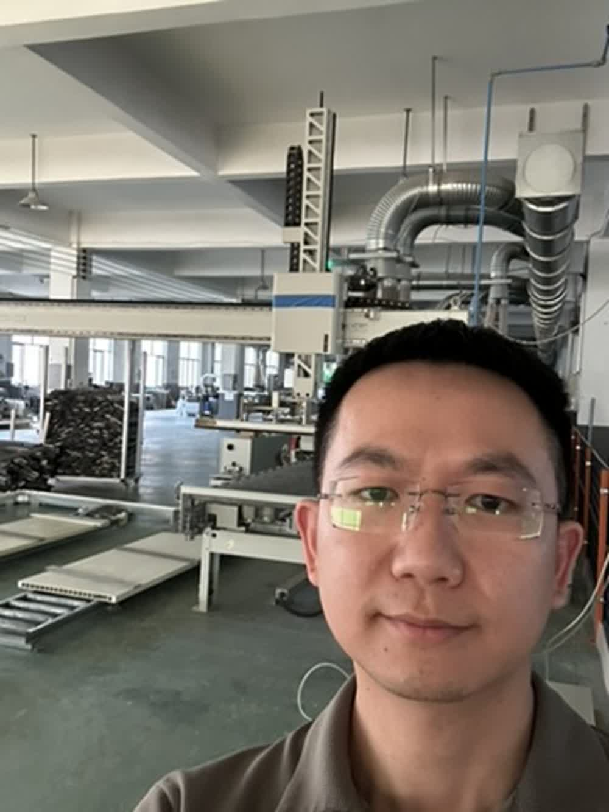

中南财经政法大学
信息管理与信息系统 · 本科
我从客户需求、收入和成本入手，和企业一起判断哪些流程值得改，再做 AI 培训和定制落地，让一线团队试起来。

信息管理与信息系统 · 本科
2017 年毕业后开始做企业软件，曾在中国民营企业 500 强、上市企业和创业团队做产品。
过去 9 年，我做过企业软件的需求调研、产品设计和上线培训，也在生产现场跟过系统试用。2026 年开始做企业 AI 落地后，我会先和一线同事梳理流程，选一个环节做出第一版，再根据试用反馈调整。
做燃气和环保监管软件，负责业务调研、产品设计和使用培训。
从零规划设备资产管理产品，参与市级工业互联网平台的设计和验收。
做设备接入和生产测试系统，也负责上线培训和后续迭代。
走访企业梳理业务需求，做 AI 培训和定制项目，把实践整理成课程和视频。
做价值投资研究时，我会看客户为什么付钱、利润从哪里来。做企业 AI 落地时，我用同样的视角判断哪些环节影响经营、哪个值得先改，再用试点的耗时和返工情况判断要不要继续投入。
学行业研究、公司分析和财报阅读。
整理首次覆盖笔记，持续跟踪行业和公司。
把对消费、科技、医药、制造和能源企业的研究写成报告，记录判断依据和需要继续验证的问题。

我带企业团队用自己的产品资料、业务表格或常见问题做实操，现场完成能带回岗位试用的初版。
我和团队一起梳理销售、研发或生产流程，做出能让一线试用的工具。
把上市公司研究流程做成了公开 Skill，可用提示词交给 Codex 等支持 Skill 的 Agent 安装。
可以先微信聊聊你想解决的业务问题，一起看看适合从团队培训还是流程试点开始。